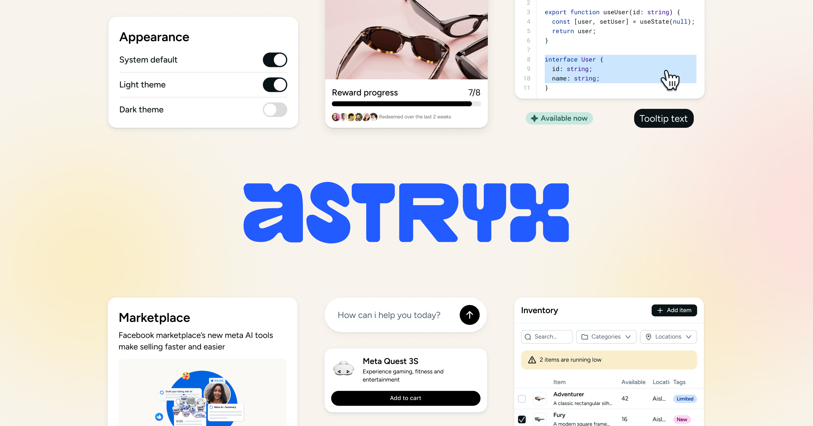
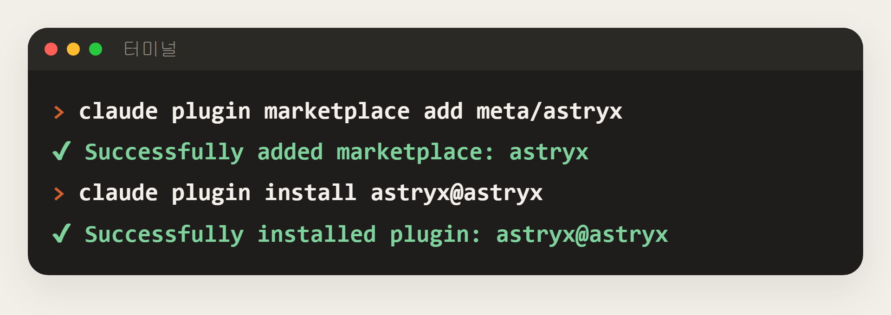
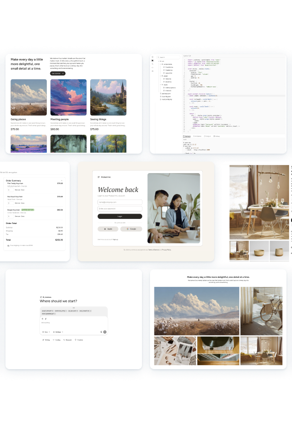
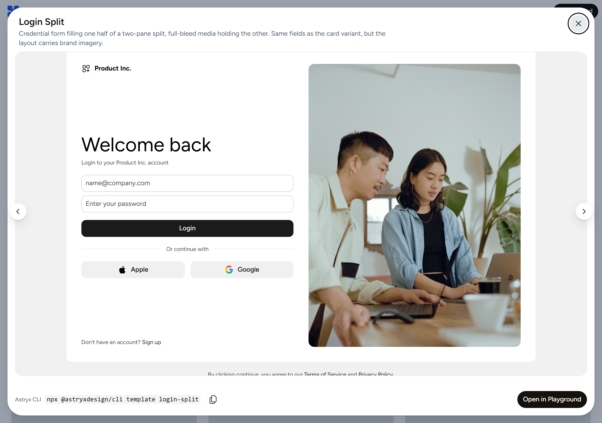
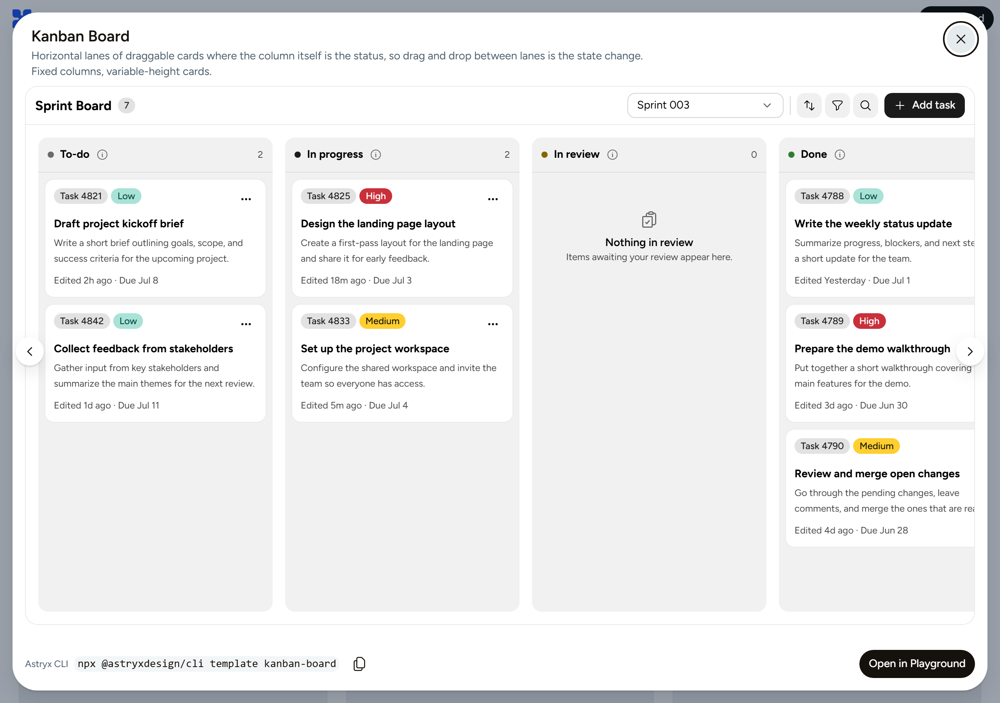
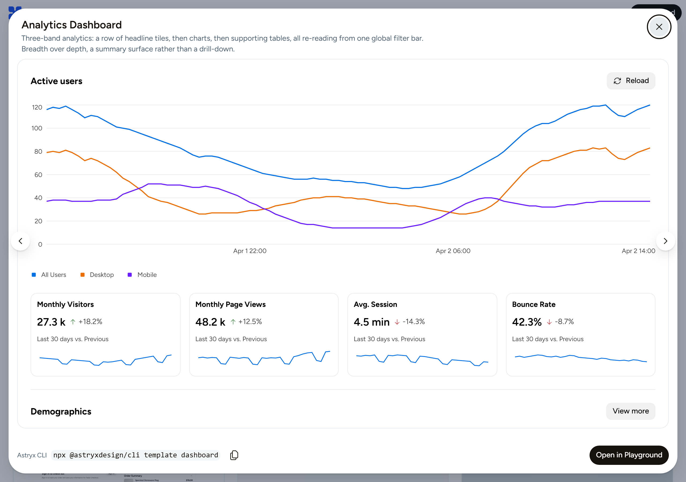
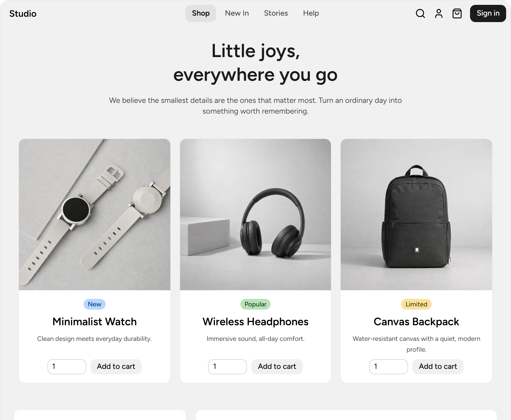
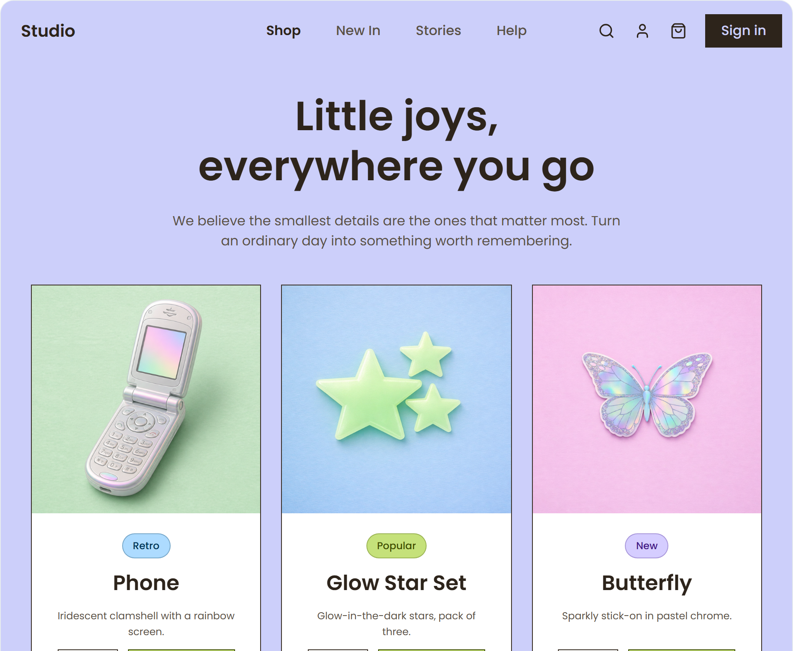
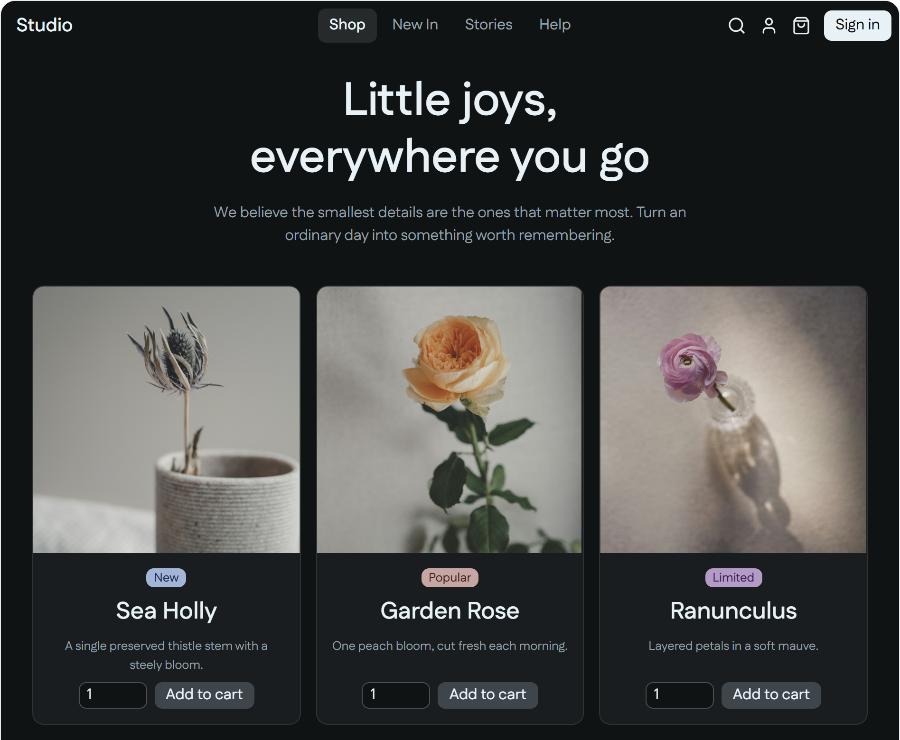
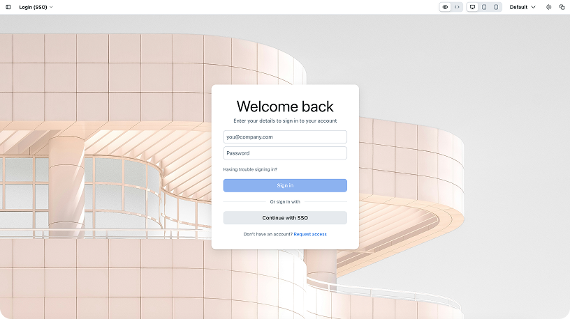

공식 설치 문서 기준. 메타 안에서 8년 동안 사내 앱 1만 3천 개 넘게 쓰인 디자인 시스템이 오픈소스(MIT)로 공개됐어요. 클로드 코드에 플러그인을 넣으면, 화면을 만들 때 처음부터 그리지 않고 메타 디자이너들이 만든 견본에서 시작해 내용만 바꿔 끼워요. 테마 일곱 가지로 분위기도 한 번에 바꿔요.

아래 '복사해서 쓰기'의 설치 1·2를 차례로 넣어요. 클로드 코드에 'Astryx' 스킬이 생기고, 화면을 만들 땐 astryx 명령을 쓰라고 알려 줘요.

만들고 싶은 화면을 사람한테 말하듯 적어요. 'Astryx로'를 붙이면 확실히 그 스킬을 써요. 처음이면 클로드가 React 프로젝트를 만들고 @astryxdesign/core·cli를 깔아요.

공식 스킬의 순서 그대로예요. astryx build "<만들 화면>"이 시작할 견본(완성 화면 58개 중)과 모자란 조각을 알려 줘요 → astryx template으로 그 견본을 깔고, 틀·간격·여백은 두고 내용만 바꿔요 → 빠진 부분은 블록·부품으로 채워요 → 끝내기 전에 직접 써 넣은 색(#hex)·크기(px)·div를 부품과 토큰으로 바꾸고 빌드해요.


astryx.atmeta.com/templates에서 대시보드·표·폼·설정·로그인·AI 채팅·갤러리를 골라 볼 수 있어요. 마음에 드는 견본 이름을 요청에 넣으면 그걸로 시작해요.

neutral·stone·gothic·matcha·butter·chocolate·y2k 일곱 가지예요. 프로젝트 폴더에서 '테마 추가' 다음 '테마 바꾸기' 한 줄이면 같은 화면이 그 분위기로 바뀌어요. 클로드한테 'y2k 테마로 바꿔 줘'라고 해도 돼요.



클로드가 빌드까지 끝내면 npm run dev로 브라우저에서 열어 봐요. 고칠 곳은 '이 표에 정렬 넣어 줘'처럼 다시 말하면 돼요.

터미널(클로드 코드 밖)
claude plugin marketplace add meta/astryx
터미널
claude plugin install astryx@astryx
클로드 코드 입력칸, 내용은 내 것으로
Astryx로 우리 가게 예약 관리 화면 만들어 줘. 오늘 예약 목록, 시간대별 빈자리, 노쇼 표시가 있으면 좋겠어. 견본에서 시작하고 빌드까지 해 줘.
클로드 코드 입력칸
Astryx kanban-board 견본으로 시작해서, 열 이름을 '할 일·하는 중·확인·끝'으로 바꾼 팀 업무 보드 만들어 줘.
프로젝트 폴더 터미널
npx @astryxdesign/cli theme add y2k
프로젝트 폴더 터미널
npx @astryxdesign/cli theme use y2k
아무 폴더 터미널
npx @astryxdesign/cli template --list
도움이 되셨다면
@ai.antenna.kr
에서 바로 쓰는 AI 활용법을 계속 올립니다.